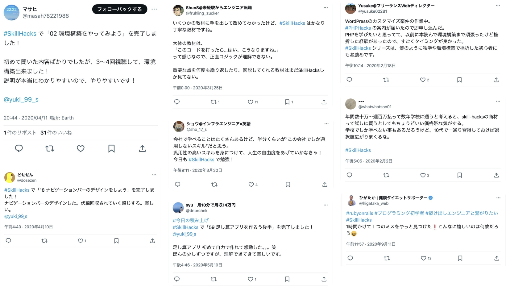

もし、あなたが、短期間で何かスキルを身につけたい！と望むなら、今すぐ、プログラミングを学ぶことを強くおすすめします。
なぜなら、プログラミングを学ぶことは、圧倒的にコストパフォーマンが高いからです。
近年、IT人材の不足は深刻化しており、転職求人倍率は5～6倍、つまり
参考：https://doda.jp/guide/kyujin_bairitsu/
プログラミングスキルがあれば、就職や転職に有利なのはもちろん、
世の中で、年収１０００万円を越えると言われる資格やスキル、公認会計士や弁護士、税理士、医師などは、いずれも、平均で２〜３年 もかけて学ばなければいけないのに対して、
プログラミングは、 わずか２ヶ月で基礎が完成し、しかも、すぐに仕事を受けることができます。
副業で空いた時間に少しだけ働いて収入を得ることもできるし、その気になれば、フリーランスで起業して、 年収１０００万円超えを目指すことも可能。
しかも、仕事は場所を選びません。自宅でも、旅行先でも、海外でも、仕事が受注できるのです。
これほどコスパの良く、自由度も高いスキルは他に無いにも関わらず、「難しそう！」と敬遠されがちなのがプログラミング。
一番大事なのは、
「最速で初心者の壁を越えること」
ただこれだけです。
本講座は、
・どこよりも楽しく、わかりやすく
・手厚いサポートで
・初心者をいち早く脱却してもらう
これを徹底的に追求して、絶対に挫折させない仕組みを作りました。
当スクールは、業界最大（5000名以上）の会員がいるにも関わらず、その半数以上が口コミだけで集まっています。

お仕事依頼サイトに
「スキルハックスの卒業生を優遇します」
と書かれたり、
「スキルハックスの卒業生を雇いたいです」
という依頼メールが頻繁に来るほど。
なぜ、これほど多くの方にご満足いただいているのか？それは、当スクール講師の迫佑樹が、「理想の教育をずっと追求してきたから」です。
今の学校教育は、「無意味な暗記」ばかりで、教科書を読んでいるだけで頭が痛くなるものが多いですよね。
それは、「直感的に理解できない」ような教え方をしていることが多いからです。それは、プログラミングのスクールも同様でした。
そこで、
「どうすれば、プログラミングを、誰でも直感的に理解してもらえるのか？」を追求することで、まるでパズルを楽しむように、誰でもストレスなくスキルが染み込んでいくように、設計しました。
そして、数々の受講者の声を取り入れながら、より良いスクールになるよう、進化させ続けました。
全人類がプログラミングを
学ぶべき理由
プログラミングを使った職業は将来性が高く、このスキルを持っているだけで年収に大きな差をつけられます。2～3年の実務経験があれば、20代で年収1000万も可能です。
PCとインターネット環境さえあれば、世界中のどこでいつどこでも働くのも自由。満員電車やオフィスが苦手と言う方にとってノンストレスで働ける理想の環境を手に入れられます。
プログラミングを使った開発は、現代の会社において必須のスキルと言えます。エンジニアの考えが理解できるので、意思疎通が楽になったり、問題解決力が圧倒的に高まります。
絶対に挫折させない
3つのステップ
STEP1
「わからない」を徹底的に潰して作り上げた94本以上の動画講義で、どんな初心者でも、ゼロから着実にスキルアップできるようになっています。
STEP2
もし、途中で分からないことがあったら、LINEでいつでも質問できます。どんな些細なことでも構いません。
STEP3
万が一、2か月以内にカリキュラムを終わらせられなかった場合、期間はいくらでも延長していただいて構いません。また、サポートも、あなたが納得いく結果が出るまで、無制限に延長します。
「たった2ヶ月で一生食いっぱぐれないスキルを身につける」ために
最高の環境を用意させていただきます。